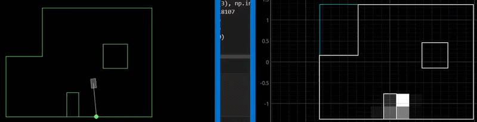
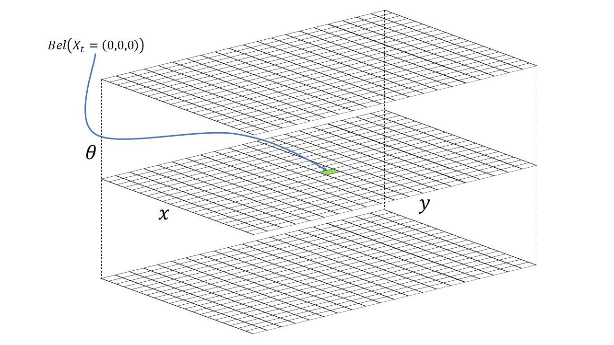
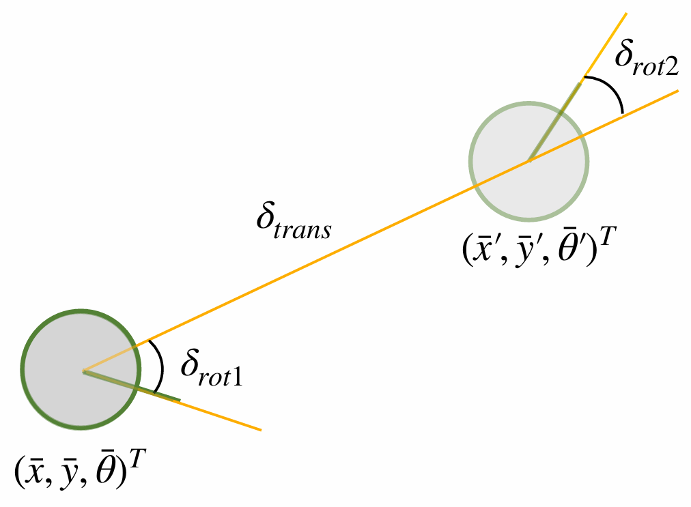

Bayes Filter • Localization • Jupyter Notebooks
This lab is about using a known map and sensor data to estimate the robot's position using Bayes Filter. Here, we perform the localization in a simulated environment to confirm that our implementation of Bayes Filter is correct before we use it for the real robot in Lab 11. We use a Jupyter Notebook to visualize the localization process and the results.
We want to perform grid localization using Bayes Filter, which means we need to discretize our world into a grid. How we've chosen to do this, is to transform a world of [-1.6764, 1.9812] meters in x, [-1.3716, 1.3716] meters in y, and [-180, 180) degrees in theta into a grid of 20 x 20 x 18 cells, where each cell represents a 0.3048m x 0.3048m x 20 degree section of the world. A visualization of this grid is shown below.

At a very high an abstract level, Bayes Filter is a way to update a probability distribution using new information. It consists of two steps, a prediction step where we update the distribution based on an assumed model of our system and some control input, and an update step where we update the distribution based on new information. In the context of localization, our distribution is a 3D grid of probabilities of where the robot is in the world, our control input is the programmed movement of the robot, and our new information is the sensor measurements from the robot, specifically the range measurements. A single step of the Bayes Filter algorithm is shown below: $$\begin{aligned} \text{Given:} \quad & bel(x_{t-1}), u_t, z_t \\ \text{For each state } x_t: \quad & \\ \text{1. Prediction Step:} \quad & \overline{bel}(x_t) = \sum_{x_{t-1}} p(x_t | u_t, x_{t-1}) bel(x_{t-1}) \ \\ \text{2. Update Step:} \quad & bel(x_t) = \eta p(z_t | x_t) \overline{bel}(x_t) \end{aligned}$$ Where \(bel(x_t)\) is the belief distribution of where the robot is at time t, \(\overline{bel}(x_t)\) is the predicted belief distribution after the prediction step, \(p(x_t | u_t, x_{t-1})\) is the probability of being at state \(x_t\) given control input \(u_t\), i.e. the motion model, and previous state \(x_{t-1}\), \(p(z_t | x_t)\) is the probability of getting sensor measurement \(z_t\) given being at state \(x_t\), i.e. the sensor model, and \(\eta\) is a normalization constant to ensure that the probabilities sum to 1. In other words:
This algorithm allows us to iteratively update our belief of where the robot is in the world as it moves and takes new sensor measurements, which is the essence of localization. For the whole filter, we would iterate through all time steps.
This process needs us to have an initial belief of where we are, a motion model to predict how our movements change our position, and a sensor model to predict how likely we are to get certain sensor measurements given our position. In our case, the initial belief is a uniform distribution across all grid cells since we have no prior knowledge of where we are.
We will use an odometry based motion model. We model our control input as the desired change in position and orientation of the robot, specified by \({\delta}_{trans}\), \(\delta_{rot1}\), \(\delta_{rot2}\) which represent the change in translation, the change in rotation before translation, and the change in rotation after translation respectively.

To input this form of odometry into our motion model, we need to convert our poses into the form of \({\delta}_{trans}\), \(\delta_{rot1}\), \(\delta_{rot2}\). This is done using the code below where pose is in the form of [x, y, theta].def compute_control(cur_pose, prev_pose):
cur_pose = np.array(cur_pose)
prev_pose = np.array(prev_pose)
delta_trans = np.linalg.norm(cur_pose[:2] - prev_pose[:2])
horizontal_angle = np.arctan2(cur_pose[1] - prev_pose[1], cur_pose[0] - prev_pose[0]) * 180 / np.pi
delta_rot_1 = horizontal_angle - prev_pose[2]
delta_rot_1 = mapper.normalize_angle(delta_rot_1)
delta_rot_2 = cur_pose[2] - horizontal_angle
delta_rot_2 = mapper.normalize_angle(delta_rot_2)
return delta_rot_1, delta_trans, delta_rot_2We can use a simple Gaussian motion model where we model our control input as a Gaussian distribution with mean at the control input and some variance to account for noise in our motion. We can then calculate the probability of conducting the given movement by sampling the calculated odometry from this distribution. We assume that the motion in each direction is independent. Multiplying the probabilities gives the probability of landing where at the new pose given the control input and previous pose (\(p(x_t | u_t, x_{t-1})\)). The code for this is shown below.
def odom_motion_model(cur_pose, prev_pose, u):
theory_odom = compute_control(cur_pose, prev_pose)
theory_rot1, theory_trans, theory_rot2 = theory_odom
u_rot1, u_trans, u_rot2 = u
prob_rot1 = loc.gaussian(theory_rot1, u_rot1, loc.odom_rot_sigma)
prob_trans = loc.gaussian(theory_trans, u_trans, loc.odom_trans_sigma)
prob_rot2 = loc.gaussian(theory_rot2, u_rot2, loc.odom_rot_sigma)
return prob_rot1 * prob_trans * prob_rot2Now we can use the previous belief, the control input, and the motion model to calculate the predicted belief of where we are after taking a movement. This is done by iterating over every grid cell and calculating the probability of moving from every possible previous cell to land into the current cell using the motion model, and then summing these probabilities together to get the predicted belief for that cell. \[\overline{bel}(x_t) = \sum_{x_{t-1}} p(x_t | u_t, x_{t-1}) bel(x_{t-1})\] The code for this is shown below. We skip over indcies that have a belief close to 0 to save computation time since they won't contribute much to the sum.
def prediction_step(cur_odom, prev_odom):
theory_odom = compute_control(cur_odom, prev_odom)
for i in range(mapper.MAX_CELLS_X):
for j in range(mapper.MAX_CELLS_Y):
for k in range(mapper.MAX_CELLS_A):
loc.bel_bar[i, j, k] = 0
curr_pose = mapper.from_map(i, j, k)
prev_indices = np.argwhere(loc.bel > 1e-6)
for i_prev, j_prev, k_prev in prev_indices:
p_prev = loc.bel[i_prev, j_prev, k_prev]
pose_prev = mapper.from_map(i_prev, j_prev, k_prev)
p_motion = odom_motion_model(curr_pose, pose_prev, theory_odom)
loc.bel_bar[i, j, k] += p_motion * p_prevWe can calculate the probability of getting a certain sensor measurement given being at a certain cell in the grid using a sensor model. We will use a simple Gaussian sensor model where we use the expected sensor measurement for being at that cell (pre-calculated using ray casting), and then sample the distribution for the probability of getting the actual sensor measurement. Our robot has one range sensor that gives us the distance to the nearest obstacle in front of the robot, so we will use this as our sensor measurement. Since, we turn 360 degrees before updating our belief and take measurements at different orientations, the function below returns a list of probabilities for each of the measurements.
def sensor_model(obs, curr_pose):
z_i_truth = mapper.get_views(curr_pose[0], curr_pose[1], curr_pose[2])
prob_array = np.zeros(len(obs))
for i in range(len(obs)):
prob_array[i] = loc.gaussian(z_i_truth[i], obs[i], loc.sensor_sigma)
return prob_arrayNow we can use the predicted belief from the prediction step and the sensor model to calculate the updated belief of where we are after taking a movement and getting a sensor measurement. This is done by iterating over every grid cell and multiplying the predicted belief for that cell with the probability of getting the actual sensor measurement if we were actually in that cell using the sensor model, and then normalizing the probabilities so they sum to 1. We calculate the probability of getting the actual sensor measurement by mutiplying the probabilities of getting each individual measurement since we assume that the measurements are independent. \[bel(x_t) = \eta p(z_t | x_t) \overline{bel}(x_t)\] The code for this is shown below.
def update_step():
for i in range(mapper.MAX_CELLS_X):
for j in range(mapper.MAX_CELLS_Y):
for k in range(mapper.MAX_CELLS_A):
curr_pose = (i, j, k)
obs = loc.obs_range_data
sensor_prob = sensor_model(obs, curr_pose)
sensor_prob_product = np.prod(sensor_prob)
loc.bel[i, j, k] = sensor_prob_product * loc.bel_bar[i, j, k]
loc.bel = loc.bel / np.sum(loc.bel)The video below shows the implementation of the Bayes Filter algorithm in a simulated environment. The blue dots represent the estimated position of the robot based on the Bayes filter, the red dot represents the estimated position of the robot based on the odometry, the green dot represents the true position of the robot, and the shaded area represents the belief distribution itself. As we can see, as the robot moves and takes new sensor measurements, the belief distribution updates and converges towards the true position of the robot, demonstrating that our implementation of Bayes Filter is working correctly. The robot gets a bit lost in the more open area in the bottom of the map since there are less features to use for localization, but it is still able to recover and localize itself once it gets back into a more feature rich area on the right. We can also see that the odometry based estimation drifts significantly over time and whenever my computer lags, while the Bayes filter estimation remains accurate, demonstrating the importance of using sensor measurements to correct for odometry drift in localization.
I used Lucca Correial's website as a reference for the report. I also worked with Ananya Jajodia on the math and used Gemini to create the best fit code.
Copyrights © 2019. Designed & Developed by Themefisher